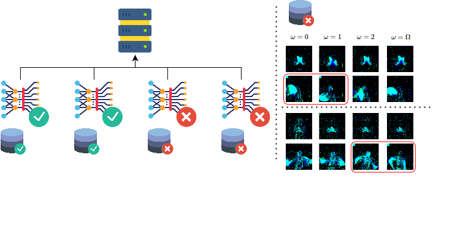

We investigate how to attack FL with SNNs using neuromorphic data. We create a new attack that distributes the backdoor trigger temporally and across malicious devices, enhancing the attack's effectiveness and stealthiness.
This paper investigates the vulnerability of spiking neural networks (SNNs) and federated learning (FL) to backdoor attacks using neuromorphic data. Despite the efficiency of SNNs and the privacy advantages of FL, particularly in low-powered devices, we demonstrate that these systems are susceptible to such attacks. We first assess the viability of using FL with SNNs using neuromorphic data, showing its potential usage. Then, we evaluate the transferability of known FL attack methods to SNNs, finding that these lead to suboptimal attack performance. Therefore, we explore backdoor attacks involving single and multiple attackers to improve the attack performance. Our primary contribution is developing a novel attack strategy tailored to SNNs and FL, which distributes the backdoor trigger temporally and across malicious devices, enhancing the attack's effectiveness and stealthiness. In the best case, we achieve a 100\% attack success rate, 0.13 MSE, and 98.9 SSIM. Moreover, we adapt and evaluate an existing defense against backdoor attacks, revealing its inadequacy in protecting SNNs. This study underscores the need for robust security measures in deploying SNNs and FL, particularly in the context of backdoor attacks.